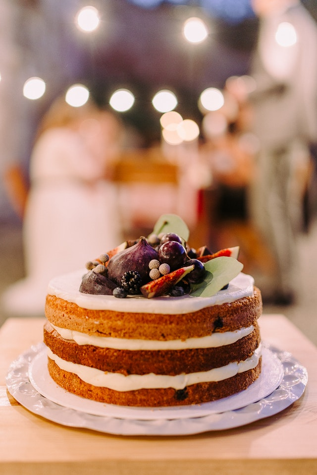

BROWNIES, Ricardo Cuisine
170 g (6 oz) de chocolat noir, haché grossièrement
170 g (3/4 tasse) de beurre non salé, coupé en cubes
2 oeufs
160 g (3/4 tasse) de cassonade
1 ml (1/4 c. à thé) de sel
75 g (1/2 tasse) de farine tout usage non blanchie
1. Placer la grille au centre du four. Préchauffer le four à 180 °C (350 °F).
2. Beurrer un moule carré de 20 cm (8 po) et tapisser le fond d'une bande de papier parchemin en le laissant dépasser sur deux côtés.
3. Dans un bol, au bain-marie ou au four à micro-ondes, fondre le chocolat avec le beurre. Laisser tempérer.
4. Dans un autre bol, mélanger les oeufs avec la cassonade et le sel à l'aide d’un fouet jusqu’à ce que le mélange soit lisse et homogène.
5. Ajouter le mélange de chocolat puis la farine et mélanger jusqu’à ce que la préparation soit homogène. Verser dans le moule.
6. Cuire au four de 23 à 25 minutes ou jusqu’à ce qu’un cure-dent inséré dans le centre du gâteau ressorte avec quelques grumeaux et non pas complètement propre.
7. Laisser refroidir dans le moule 2 heures. Démouler et couper en carrés. Servir tiède ou froid.

GÂTEAU, Trois fois par jour
1 1/2 tasse de farine tout usage
1 1/2 c. à thé de bicarbonate de soude
Une pincée de sel
1 c. à soupe de zeste de citron
3 c. à soupe de jus de citron
3/4 de tasse de sucre
2 œufs
1/2 tasse d’huile de canola
3/4 de tasse de yogourt grec à la vanille Oikos
1 tasse (1 casseau) de framboises fraîches
1. Préchauffer le four à 350 °F. Tapisser un moule à pain de papier parchemin. Réserver.
2. Dans un bol, mélanger la farine, le bicarbonate de soude et le sel. Réserver.
3. Dans un autre bol, mélanger le zeste et le jus de citron avec le sucre.
4. Incorporer les œufs un à un, en fouettant entre chaque addition, puis ajouter l’huile et le yogourt.
5. Verser la farine, bien mélanger, puis ajouter les framboises délicatement sans trop mélanger.
6. Verser au fond du moule, puis enfourner pendant 45 minutes, ou jusqu’à ce que le centre soit bien cuit.
MUFFINS, PLANbouffe
3 bananes bien mûres
1/3 tasse d’huile végétale, idéalement de saveur neutre, ex. huile d’avocat
1/3 tasse de sirop d’érable
2 œufs
1 à 2 c. à thé d’extrait de vanille, au goût!
1 1/2 tasse de farine au blé entier, pour plus de protéines, remplacer 1/2 tasse de farine par 1/2 tasse de protéine de pois ou de protéine en poudre à la vanille
1/2 tasse de flocons d’avoine
1 c. à thé de bicarbonate de soude
1/2 c. à thé de poudre à pâte
1/2 c. à thé de sel
1/2 c. à thé de cannelle
1/3 tasse de lait
1/2 à 3/4 tasse de pépites de chocolat
1. Préchauffer le four 350°F. Au besoin, huiler des moules à muffins (ou utiliser des moules en silicone antiadhésifs).
2. Dans un grand bol, écraser les bananes à la fourchette. Ajouter l’huile, le sirop d’érable, les œufs et l’extrait de vanille. Mélanger.
3. Sur le dessus des ingrédients humides, déposer la farine, les flocons d’avoine, le bicarbonate de soude, la poudre à pâte, le sel et la cannelle. Mélanger les ingrédients secs délicatement avec une fourchette puis incorporer aux ingrédients humides.
4. Ajouter le lait et les pépites de chocolat. Mélanger une dernière fois.
5. Répartir la pâte dans 12 moules à muffins. Cuire au four de 25 à 30 minutes ou jusqu’à ce que le bout d’un petit couteau coupant piqué au centre d’un muffin en ressorte propre (il peut y avoir du chocolat fondu évidemment!).